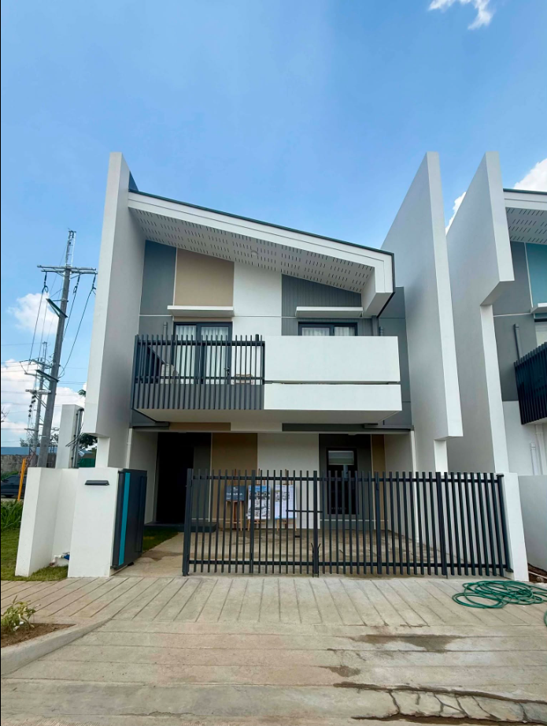
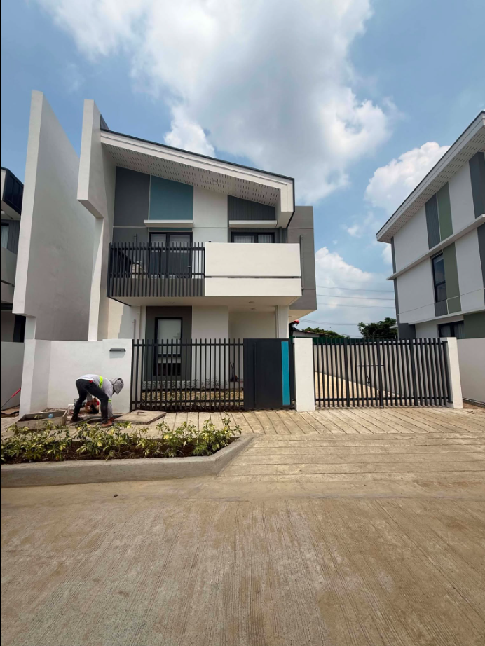
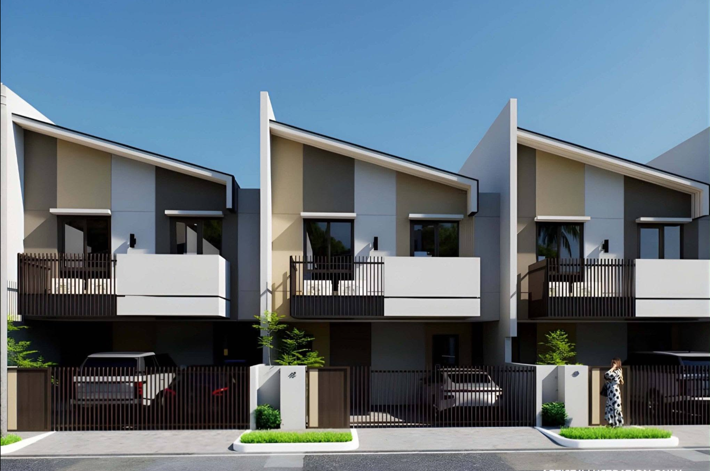
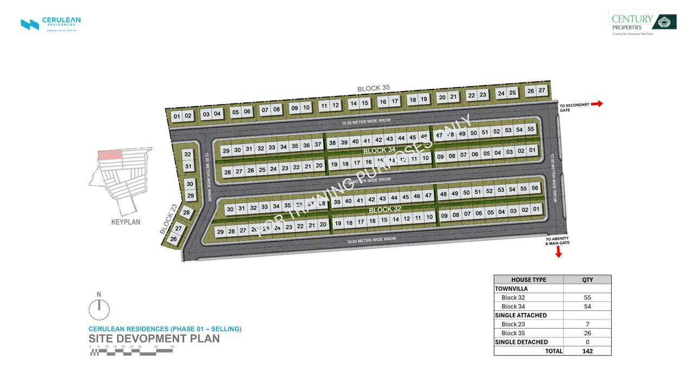

Pala-Pala, Dasmariñas, Cavite, Philippines
Cerulean Residences is conveniently located in the Pala-Pala area of Dasmariñas, Cavite. The location provides residents with convenient access to commercial establishments, schools, hospitals, public transportation, and major roads connecting Dasmariñas to other parts of Cavite and Metro Manila.
Cerulean Residences is a residential development offering single-attached homes, single-detached houses, townvillas, and residential lots in Dasmariñas, Cavite. It is designed for families, homebuyers, and property investors looking for a comfortable home in a strategically located community.
Cerulean Residences offers the opportunity to own a single attached home in one of the growing areas of Dasmariñas, Cavite. Its Pala-Pala location provides convenient access to daily necessities and important establishments while offering a comfortable residential environment for families.
Contact us for the latest price, sample computation, financing options, reservation requirements, promotions, and available units at Cerulean TownVillas.
Interested in Cerulean Residences? Contact us today to check available units and schedule a property viewing in Pala-Pala, Dasmariñas, Cavite.
For inquiries about Cerulean TownVillas, contact Rico Gidoc at 0939-120-9602 or visit cavitehouseandlot.com .